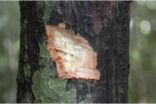
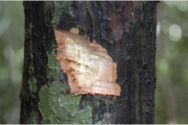

Images :

 



| Habit : | Gymnospermous trees up to 30 m tall. |
| Leaves : | Phyllode opposite or subopposite , decussate , subsessile , glabrous , 10-15 x 3-5 cm, narrow elliptic , elliptic-lanceolate , apex narrowly acute , base attenuate , margin entire , nerve many, parallel . |
| Inflorescence / Flower : | Spornagial structures, cone shaped; pollen cones axillary , solitary ; seed bearing structures terminal , solitary ; stalk ca. 1 cm long. |
| Fruit and Seed : | Seed green, drupe-like, ovoid , seated on fleshy receptacle . |